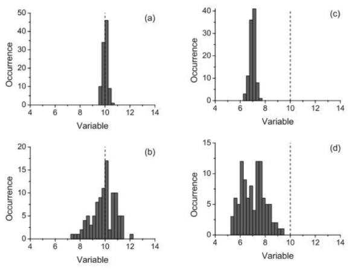

Measurements, Errors and Uncertainty#
In the skills lecture on Monday you were introduced to the idea of measurement errors and uncertainty. Provided below is a summary of the topics covered in your lecture. This information was taken from Measurements and their Uncertainties: A Practical Guide to Modern Error Analysis by Hughes and Hase, which is a useful book that covers the content at an accessible level.
Accuracy, Precision and Types of Error#
When we take a measurement, we cannot say with absolute certainty what the value of the measurement is, instead we report our best estimate along with its associated uncertainty (or error). A value reported with a small uncertainty may be considered to be precise, but this does not necessarily mean that it is accurate.
If we were to measure something many times, we would be able to plot a distribution of our measurements (e.g. the number of times we measure the value to be x). Our best estimate of the value would be equal to the mean of our measured values. If our distribution of measurements is narrow (the spread of our measurements is small) we would say that the best estimate is precise (plots a and c) and if our best estimate was close to the known value (plots a and b) we would say it is accurate.

Our measurement can be both accurate and precise (a), accurate but imprecise (b), precise but inaccurate (c), or neither accurate nor precise (d).
The source of the error associated with a measurement may be attributed to many factors, but these may be categorised as either random errors, systematic errors or mistakes:
Random errors may be characterised by a large spread in the measurements that we take and therefore impact the precision of our measurement. Although we take care to control the impact of all external variables in an experiment, parameters out of our control will still impact the measurements we take leading to a distribution. For example, if I roll a toy car down a ramp and measure how far it travels, I can take care to ensure the car is released from the same point on the ramp each time, but I cannot control small fluctuations in temperature or the direction of currents in the air.
Systematic errors are characterised by a shifting of our measurements away from the known value, these affect all measurements taken and impact the accuracy of our measurement. Using the example above, if I were to measure the distance the toy car had travelled, but started my measurement 10 cm away from the point of release, this would shift my measured distance away from the distance the car really travelled.
Mistakes. These may be difficult to spot and can negatively impact the quality of the data we are using. A mistake may be as simple as recording a value of 3.14 as 3.41. It would be difficult to determine if a mistake has been made or the value is just larger than anticipated when performing analysis. To reduce the frequency of mistakes we make, we should take care when reading scales, converting units and using measurement equipment.
The Mean, Standard Deviation & Standard Error#
When we take a series of measurements, we will measure a distribution of values such as those shown in the histograms above. The mean of these values is taken as our best estimate as taking the mean is the best way to reduce the impact of random errors in our measurements. The mean is calculated as follows:
Another important property to consider is the spread of our distribution, the size of the spread allows us to determine the precision of our measured value, with a smaller spread corresponding to a more precise value. The statistical approach to determining the spread of our distribution is to calculate the standard deviation.
For a given data point in a distribution, there will be some deviation between it and the mean:
Across the entire distribution the average of the deviations is likely going to sum to zero assuming that all of the data points are evenly distributed around the mean, therefore we cannot use the sum of deviations as a measure of the distribution spread. The square of the deviations will be positive regardless of whether or not the deviation is positive or negative, therefore we can calculate the average of the squared deviations, this is known as the variance:
which is more commonly expressed as:
The function is normalised by N-1 rather than N as the mean has already been determined using this dataset, meaning that there is one less independent value to be used when calculating the variance.
The standard deviation is a measure of how much the individual measurements in a sample differ from the mean value of all the measurements in that sample.
To determine the best estimate of the error associated with our mean value, we must take into account the number of measurements in the sample. As we increase the number of measurements used to determine our best estimate, the magnitude of the associated error should become smaller. The best estimate of the error associated with our mean value is the standard deviation of the mean (SODM), which is more commonly referred to as the standard error:
Reporting Values and Associated Errors#
Once we have made our measurements, determined the mean value of our measurements and the standard error associated with the mean, we can then report our final value. When doing so it is important that we present this value appropriately. In general, the we report our value using the following convention:
Round the error to an appropriate number of significant figures (typically one),
Report the best estimate value to the same precision as the error,
Report the best estimate and the associated error with units.
For example, if my mean and standard error were calculated to be:
I would report my final value as:
If reporting very small or very large numbers, it may also be appropriate to use standard form, for example:
could be reported as:
Activities#
The aim of this exercise is to continue to familiarise yourself with how to perform calculations using computers and gain a better understanding of the statistics we use in Physics.
Three sets of data are provided in activity 2 - data sets - make a copy of this spreadsheet to use for these activities. For each data set you must:
calculate the mean of each data set,
calculate standard deviation of each data set,
calculate standard error of each data set,
present the best estimates and their associated uncertainties appropriately.
Use Google sheets to do this for the first data set. A template of a standard deviation table has been provided for you to modify and use. If you have never calculated standard deviations before, it is worth your time performing the calculation using the table to gain a better understanding of the formula.
Use the Python interpreter for the second data set. You can use this however you see fit - remember that the interpreter is great to use as a simple calculator!
Use the Jupyter Notebook environment to do this for the third data set.
You are free to use any existing knowledge of using Google Sheets or Python to quickly check your calculations. The data generated for this task follows a normal distribution (a gaussian distribution). An understanding of the characteristics of a normal distribution is very important in statistics and Physics.
Plot the first distribution as a histogram using google sheets to better visualise this data. Once again, you are free to use any existing knowledge of Google Sheets or Python to do this.